Home devices · Hub · v5 · concept D underglow · 19 Nov 2026
HOME · 01 hub, v5
A Raspberry Pi 5 Home Assistant hub in a floating white shell. A continuous band of light washes onto the table from underneath; air comes in through a hidden, light-trapped intake below and leaves through the recessed I/O bay at the back. This report covers every printed part with its dimensions and print settings, the drawings, assembly and wiring, airflow, the design review and the bill of materials.
Room light, lights off. The roof carries only the label.
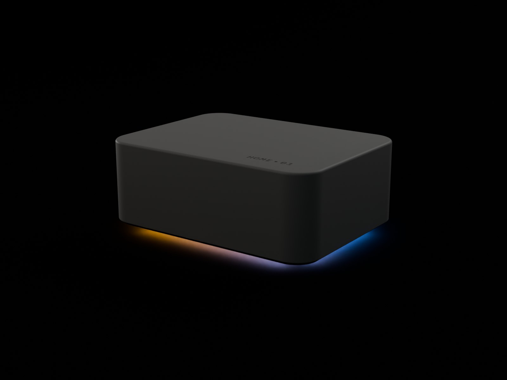
Dark room, per-LED orange-to-blue gradient.
106 × 80 × 42mm overall (W × D × H)
5.0mm float under the shell
36RGBW LEDs, 4 straight runs
6printed parts, no AMS
4 h 43 mintotal print time
97 gfilament (58 g white, 39 g black)
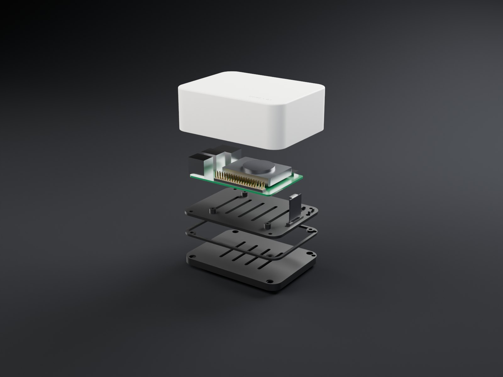
Stack, top to bottom: shell, Pi 5, floor with ESP32, plenum frame, plinth, diffuser ring.Cutaway (Pi left out): floor, frame, plinth and channel inside the shell's skirt.
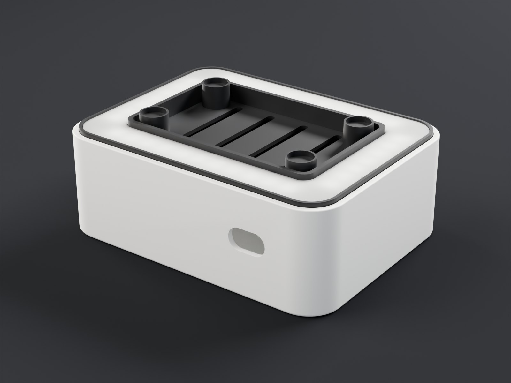
Underside: diffuser ring, foot ring, four pads, intake slots.
Light
Underglow: one continuous band
The strip lies flat, LEDs down, in a black channel inside the shell's skirt: an SK6812 RGBW 5 V strip at 144 LEDs/m, 12 mm wide. It is cut into four straight runs (11 + 7 + 11 + 7) joined by three short wires at each corner. A 0.6 mm white PLA diffuser ring across the channel opening blends the LEDs into one band, carries it round the corners, and hides the reflections of individual LEDs on glossy tables. The black lining hangs 1.5 mm below the shell's edge and reads as a thin shadow line. No light reaches the white shell.
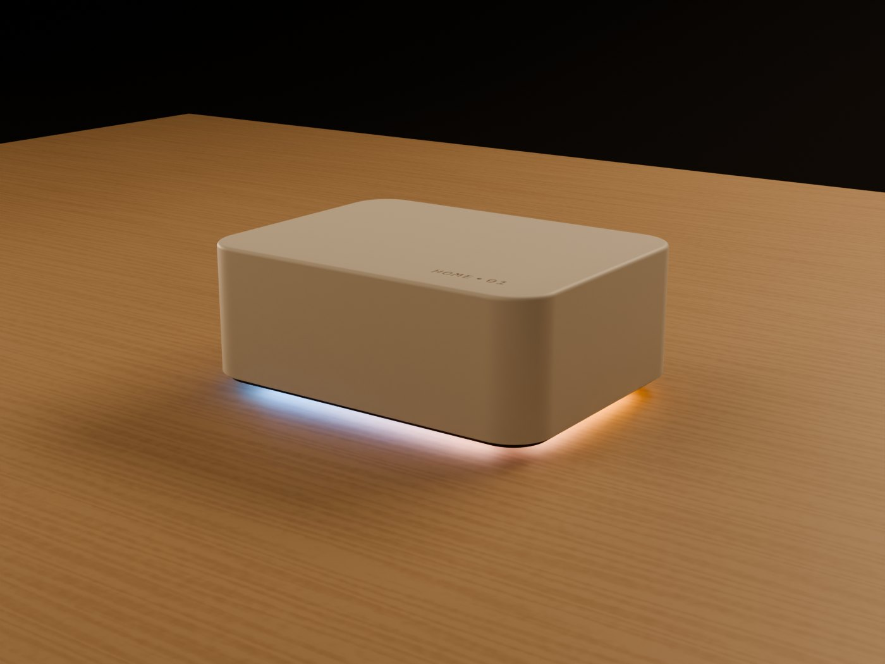
Satin oak, dim warm room.
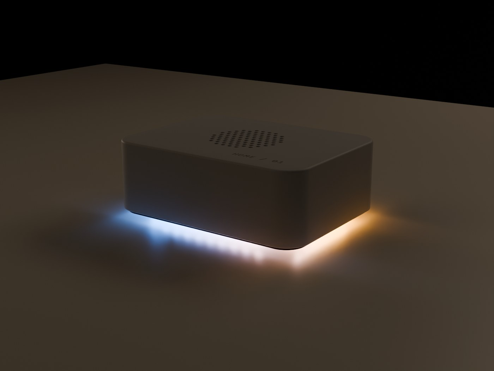
Honed cream quartz, dark room.
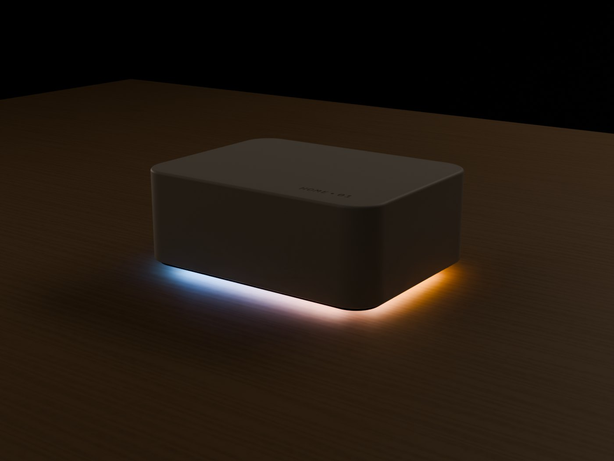
Satin oak, dark room.
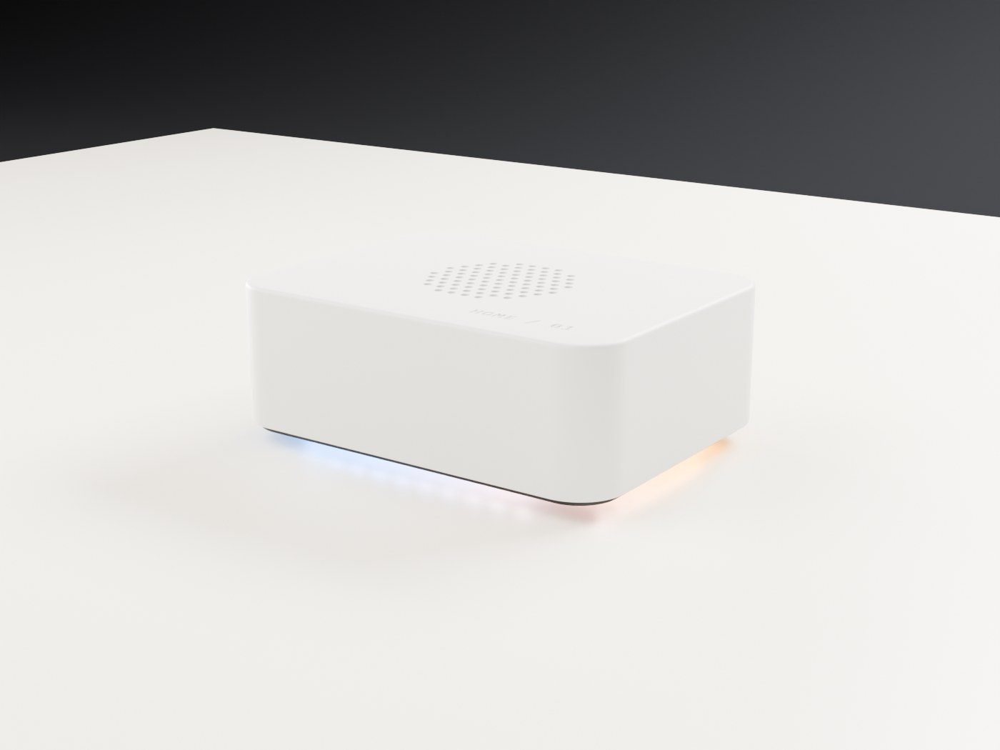
Quartz, bright room: a faint accent, as expected.
All light renders use the same output: about 4.5 lm per LED at the 0.5 A power cap, each LED modelled as a 5 mm emitter facing down. Colours in renders look paler than the LEDs' raw colours; judge the gradient on the real strip.
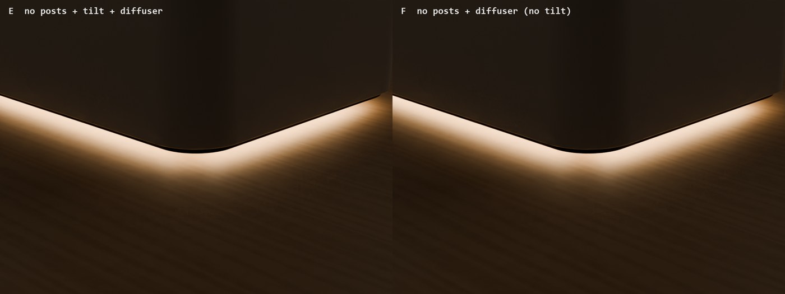
Corner study: with the screw posts gone and the diffuser fitted (F, right), the band runs round the corner with no extra LEDs.
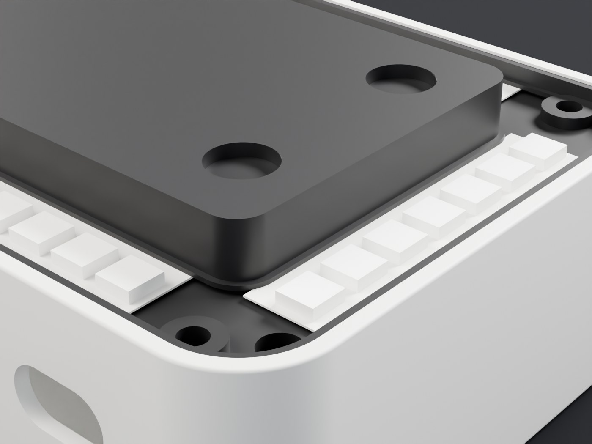
Channel from below: diffuser ring, foot ring, screw pocket under the diffuser.
Airflow
Ventilation: low intake, high exhaust, nothing on top
Air enters under the foot ring (a 2 mm gap round the four pads). It passes through four slots in the plinth plate into a 2 mm plenum, then out of five floor slots offset from the first four. There is no straight line from any lit surface into the shell, so no light gets in. Hot air leaves through the I/O bay: the frame of open space round each of the Pi's port jacks, plus the USB-C slot.
Opening
Area mm²
Note
Gap under the foot ring
496
2.0 mm × perimeter
Plinth plate slots (4 × 3 × 40)
472
Floor slots (5 × 3 × 40)
590
offset 7 mm from the plate slots: the light trap
Intake, effective (in series)
264
Exhaust: free area round the jacks + USB-C
226
the jacks fill most of each window, plugged or not, so this is the limit
Case (25 °C room)
Heat
Inside air rise
Inside air
Idle, fan off
3.3 W
+39 K
≈ 64 °C
Idle, fan stirring (0.5–3 Pa)
3.3 W
+13 K (10–19)
≈ 38 °C
Busy, fan off
6.3 W
+67 K
≈ 92 °C
Busy, fan on
6.3 W
+24 K (19–36)
≈ 49 °C
What this means
The hub is only 42 mm tall, so warm air rising on its own (17 mm of height) moves very little. The Active Cooler's fan does the real work. The Pi switches it on at 50 °C on the chip, so in practice it will tick over at low speed most of the time. With the fan running, the inside sits about 38–49 °C, which is under PLA's 57 °C softening point but closer than I'd like when busy. This is a lumped estimate, not a simulation. A 10-minute stress-ng run logging vcgencmd measure_temp and get_throttled decides it. If it runs hot, the first fix is to print the shell in PETG or open the bay further.
Printed parts
Six parts, one colour each
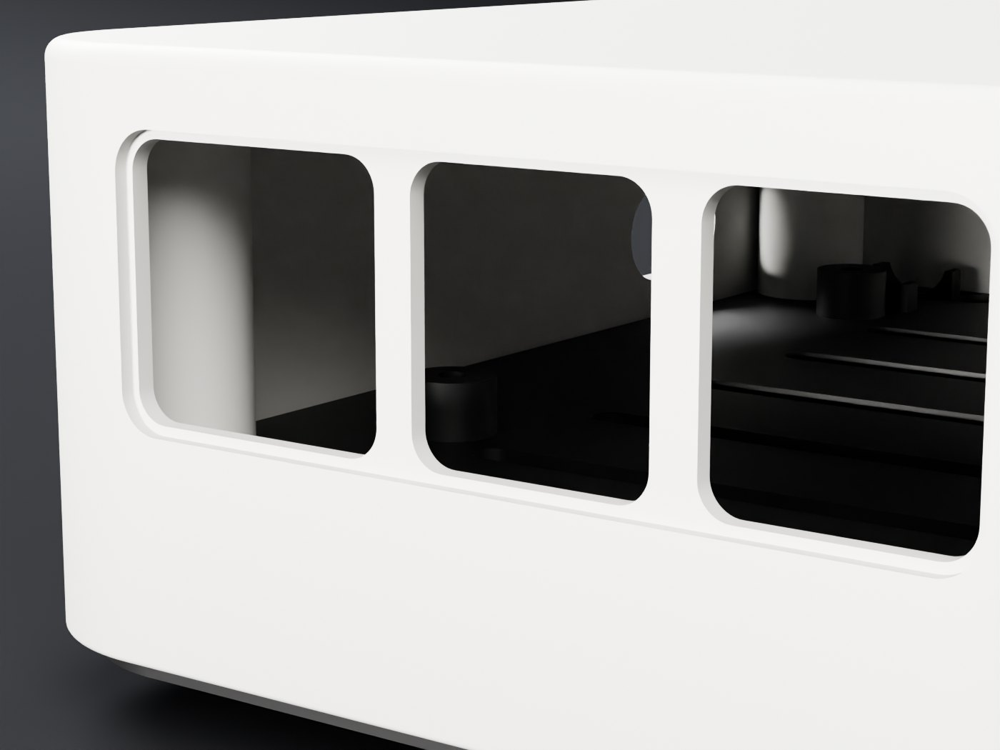
I/O bay: one 0.8 mm recess round three full-height port windows.
1 · Shell
Material
White PLA
Size
106 × 80 × 37 mm (z 5 → 42)
Print
Upside down, roof on the bed · 0.08 mm Extra Fine · outer wall 60 mm/s at 2000 mm/s² · 4 walls · 1 mm top/bottom · seam at the back
Time · filament
3 h 26 min · 55 g
Plan corners R12, top edge fillet R1.2, walls and roof 2.0 mm.
4 bosses Ø9.6 at (±42, ±33.2), fused into the walls; Ø4.0 × 8 holes for M3 × 5.7 heat-set inserts.
I/O bay: windows 17.9 / 15.1 / 15.1 wide × 16.8 tall, sills at z 19.9, inside a 0.8 mm recess.
USB-C slot 14 × 8 mm on the +Y side, centred at x 25.8, z 21.7.
Label HOME · 01: 6 mm bold mono, letters 0.6 mm deep, house dot Ø1.3 cut 1.2 mm deep, ≥ 8.8 mm from the fillet.
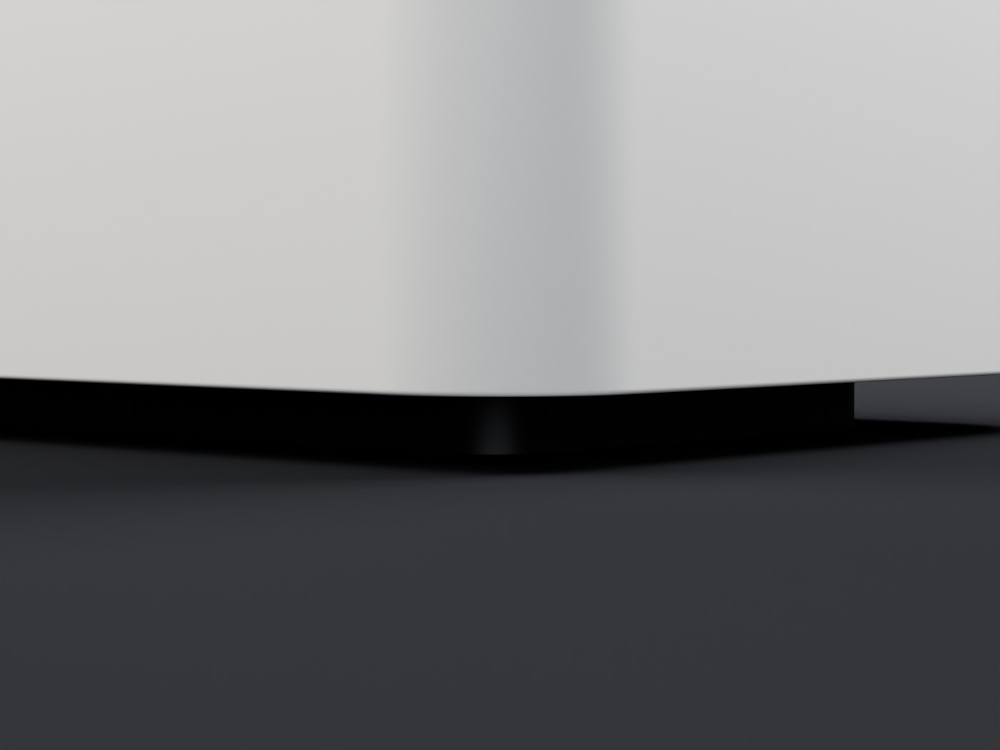
The float: white edge, 1.5 mm black hang, dark gap, glow.
2 · Plinth
Material
Black PLA
Size
101.6 × 75.6 × 10.0 mm
Print
Upside down, top plate on the bed · 0.20 mm Standard · no supports (plate black A, with the frame)
Time · filament
plate A: 41 min · 22 g
Top plate 1.4 mm at z 8.6–10.0; 0.2 mm fit to the shell's inner wall.
Black lining 1.0 mm, from the plate down to z 3.5: 1.5 mm below the shell's edge.
LED channel 12.3 mm wide; strip lips 0.8 × 0.6 mm with 0.6 mm above them for PCB + tape; LED faces at z 6.4, 1.4 mm above the shell edge (hidden from the side).
Foot ring 1.6 mm wall, inset 15.5 mm, ending 2.0 mm above the table; 4 pads Ø10 at (±30, ±17) with Ø8.6 × 1.8 recesses for Bumpons.
Diffuser stop rings 0.8 × 0.6 mm and 8 crush ribs; 4 intake slots 3 × 40 at x −21, −7, 7, 21.
Head pockets Ø6.4 at the screw positions, flush with the plate; wire hole Ø4 at (47.3, 31).
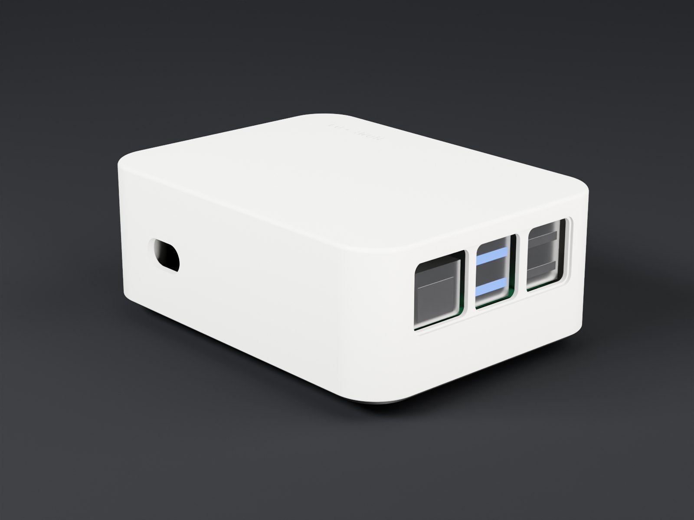
Ports end with the Pi fitted.
3 · Frame · 4 · Floor
Material
Black PLA
Frame
101.6 × 75.6 × 2.0 mm, flat (plate A)
Floor
101.6 × 75.6 × 6.5 mm, flat (plate B: 30 min · 17 g)
Frame: 2.5 mm rim plus 4 spacers Ø7 at the screws. It holds the 2 mm plenum and is its own part so nothing has to bridge it.
Floor: 2.5 mm plate at z 12.0–14.5; 4 Pi standoffs Ø6 × 4 with Ø2.2 pilot holes (M2.5 from the top).
ESP32 card slot 1.3 × 18.4 × 1.5 deep at x 45.5, gripping only the board's corners.
Saddle for a 470 µF 6.3 × 11 capacitor at y 24.8; 5 intake slots at x −28, −14, 0, 14, 28; wire hole Ø4 at (47.3, 19).
The label with the house dot.
5 · Diffuser ring · 6 · Fit-test piece
Diffuser
99.0 × 73.0 × 0.6 mm, white PLA
Print
Flat, visible face up · 0.20 mm (3 solid layers) · 6 min · 3 g
Fit test
Last 16 mm of the shell's ports end, to check the I/O bay against your Pi before the full shell
Pushed up into the channel until it meets the stops, 1.9 mm under the LED faces; 0.3 mm side clearance taken up by the crush ribs.
Inner corners follow the foot ring (R4.3), so no unscattered light gets past.
Pops out with a fingernail at a corner to reach the four screws.
Drawings
Dimensioned drawings
Every number comes straight from the model. Click a drawing to open it full size, and click again for 1:1.
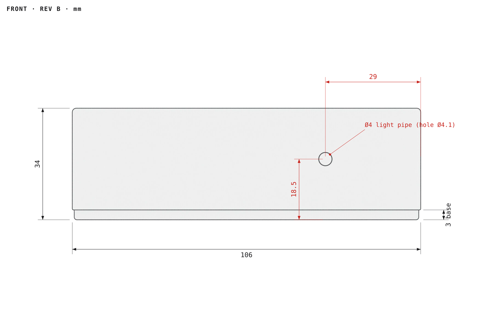
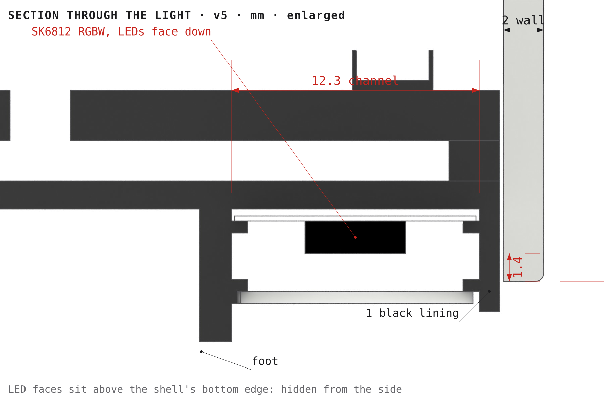
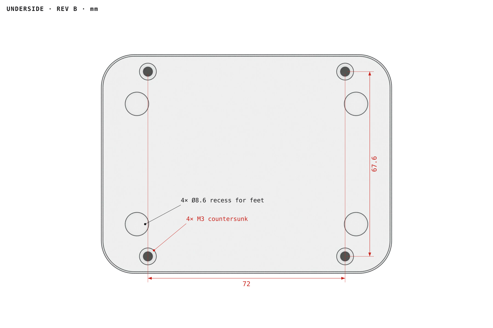
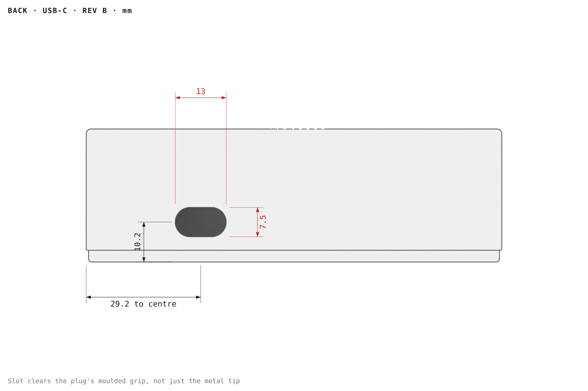
Assembly
Assembly sequence
Flash Home Assistant OS onto the microSD card, and ESPHome onto the ESP32 over USB, before anything is wired to the Pi.
With the shell upside down, press the four M3 heat-set inserts into the bosses with the insert tip, flush and square.
Cut the strip at its cut marks into two runs of 11 and two of 7. Join them in chain order (+X run, −Y, −X, +Y) with three short 26 AWG jumpers at each corner: 5 V, GND and data (DO to DI, following the arrows).
Snap the runs into the plinth's channel, LEDs facing down, bowing each slightly to get it past the lips.
Take the chain's input wires (5 V, GND, DIN) up through the plinth's wire hole, the frame and the floor's wire hole, then seal the plinth hole round them with black hot glue.
On the floor: seat the 470 µF capacitor in its saddle across 5 V / GND, and wire the 74AHCT1G125 (on its adapter, under heat-shrink) and the 330 Ω resistor in the data line. Stand the ESP32 in its card slot, antenna end down, with a dab of hot glue on the corners.
Fit the Active Cooler to the Pi, screw the Pi to the floor's standoffs with 4 × M2.5 × 6 from the top, and push the 1 × 2 header onto pins 4 and 6.
Lower the floor into the upside-down shell, Pi first, so the ports line up with the I/O bay. Then lay the frame on it, then the plinth.
Drive the four M3 × 10 button heads up through the plinth's pockets into the inserts. Don't overtighten into PLA.
Push the diffuser ring up into the channel until it meets the stops, and stick the four Bumpons into the pad recesses.
Test: run the LEDs at the cap for an hour and feel the plinth; run a 10-minute stress test and log the Pi's temperature.
resistor at the strip end; 0.1 µF across pins 5 and 3
Strip DO (end of each run)
DI of the next run
26 AWG × 3 per corner
5 V and GND jumpers alongside
Power cap: set max_brightness and color_correct in ESPHome so the strip stays near 0.5 A. Full RGBW on 36 LEDs would draw about 2.6 A. Never plug USB into the ESP32 while the Pi is powered.
Design review
What the review found, and what changed
The design-review agent went through the model, meshes, slices and renders. Every fix below is in the model. The mesh, interference and slice checks were re-run after the fixes; there hasn't been a second full review pass yet.
Finding
Severity
Resolution
The diffuser couldn't be fitted, and it would have hidden the screws
Blocker
Inward floor and ledge removed. The diffuser is now a press fit against stop rings with crush ribs, and comes out to reach the screws. Fixed
Plinth print would bridge its whole 72 mm plate 2 mm off the bed
Blocker
Plenum rim and spacers moved to a separate flat-printed frame. Fixed
Strip ends overlapped at the corners (11 + 8)
Should fix
11 + 7 a side, 36 LEDs. Fixed
Inner lip didn't reach the strip ends
Should fix
Lip corners squared. Fixed
Screw head pockets too tight (Ø5.8 for a 5.7 head)
Should fix
Ø6.4; bosses Ø9.6 at y ±33.2 so the pockets clear the lining by 0.3 mm. Fixed
Light leak at the diffuser's inner corners
Should fix
Inner corners now follow the foot ring. Fixed
Airflow model overstated the exhaust 2–3×
Should fix
Uses the real free area round the jacks (226 mm²); conclusions restated. Fixed
Boss touched the capacitor saddle
Should fix
Saddle moved; no part-to-part overlaps except the intended crush ribs. Fixed
Insert bosses printed with only 2 walls
Should fix
Shell sliced with 4 wall loops. Fixed
Wire hole: one grazing light path into the plenum
Nit
Sealed round the wires with black hot glue (in the BOM). Fixed
USB-C slot is a visible unlit opening
Nit
A functional port, like the I/O bay. Needs your sign-off as an exception. Your call
Light hub: plugging in an Ethernet cable can slide it
Nit
Hold it while plugging in; the Bumpons help. Noted
Open items
To verify before the full print
Item
Why
How to close it
Cooling
The estimate shows the fan is essential.
10-minute stress test logging temperature and throttling, after the first build.
Pi 5 port and hole positions
Still from memory, not the official drawing (RP-008347).
Check against RP-008347, then print the 16 mm fit-test piece and try it on your Pi.
Your USB-C plug
The socket sits 10.8 mm in, so the moulded end must fit a 14 × 8 mm slot.
Measure the plug end with calipers.
ESP32 edge clearance
The slot assumes 1.5 mm of bare board at the antenna end.
Measure your board; widen the relief if needed.
Diffuser thickness
0.6 mm is a starting point.
Hold a strip behind your 0.6 mm skin coupon; go to 0.4 or 0.8 if the band looks spotty or dim.
Strip temperature
PLA softens around 57 °C.
One hour at the 0.5 A cap; print the plinth in PETG if it gets warm.
Bill of materials
Everything to order
Rough US prices from late 2026, not checked against live listings. The same list is in home-devices/hub/BOM.md.
Electronics
Part
Spec
Qty
≈
Raspberry Pi 5
4 GB is plenty for Home Assistant
1
$60
Pi 5 Active Cooler
official; the case is built round it
1
$5
Official 27 W USB-C supply
5.1 V 5 A: LEDs and ESP32 run off the Pi's 5 V
1
$12
microSD 64 GB, high endurance
SanDisk High Endurance / Samsung PRO Endurance
1
$12
Ethernet cable 0.5–1 m
1
$5
LED strip
SK6812 RGBW, 5 V, 144/m, 12 mm, white PCB, IP30; warm or natural white. 36 LEDs used
1 m
$15–25
ESP32-C3 SuperMini
22.5 × 18 mm; usually a 2–3 pack
1
$8
74AHCT1G125 level shifter
SOT-23-5, plus SOT-23 to DIP adapters and a 0.1 µF capacitor
2
$8
Electrolytic capacitor
470 µF, 10 V, 6.3 × 11 mm
1
$1
Resistor 330 Ω
¼ W
1
$1
Female pin header 1 × 40, 2.54 mm
cut a 1 × 2 for pins 4 + 6
1
$2
Silicone wire
26 AWG, 3 colours; 22–24 AWG red + black
1 set
$10
Heat-shrink assortment
1.5–3 mm
1
$6
Hardware and filament
Part
Spec
Qty
≈
Heat-set inserts
M3 × 5.7, OD 4.6 (Ruthex / CNC Kitchen standard)
4
$8
Button-head screws
M3 × 10, ISO 7380, black
4
$6
Pi screws
M2.5 × 6 socket or pan head
4
$6
Rubber feet
3M Bumpon SJ5302, 7.9 × 2.2 mm
4
$5
Black hot-glue sticks
seal the wire hole
few
$5
White PLA
shell 55 g + diffuser 3 g
1 kg
$20
Black PLA
plinth + frame 22 g, floor 17 g
1 kg
$20
Parts total
without filament
≈ $170–185
Tools (skip what you have)
Tool
Why
≈
Temperature-controlled iron (e.g. Pinecil V2 + 65 W USB-C PD charger)